Books beginning
o
54 books
-
ራስን ማሳደግራስን ማሳደግ Optimal Thinking (Rasin Masadeg) Dr. Rosalene Glickman
-
ሰውዬው ማንነው?ሰውዬው ማንነው? Osama Bin Laden - Biography Thomas Mockaitis
-
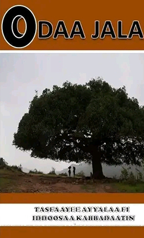
Odaa Jala ተስፋዬ አየለ · 2009 -
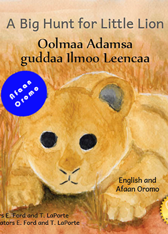
Oolmaa Adamsa guddaa Ilmoo Leenca Ready Set Go Books -
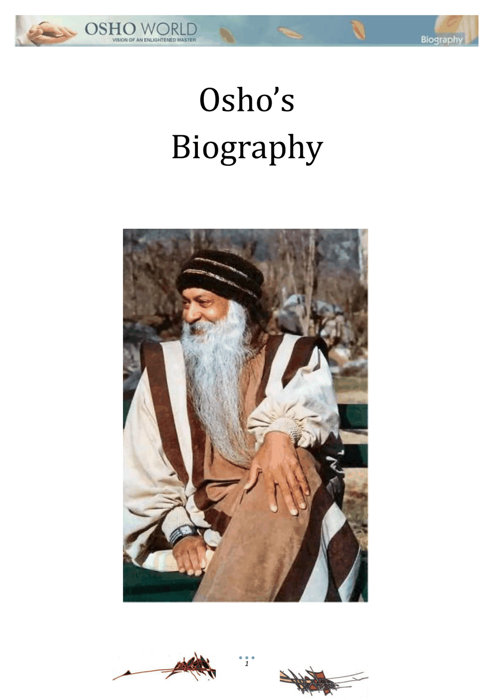
Osho's Biography -
ኢትዮጵያኢትዮጵያ OUR LAND
-
ኦማሂሬኦማሂሬ Omahire Minilik Zeleke
-
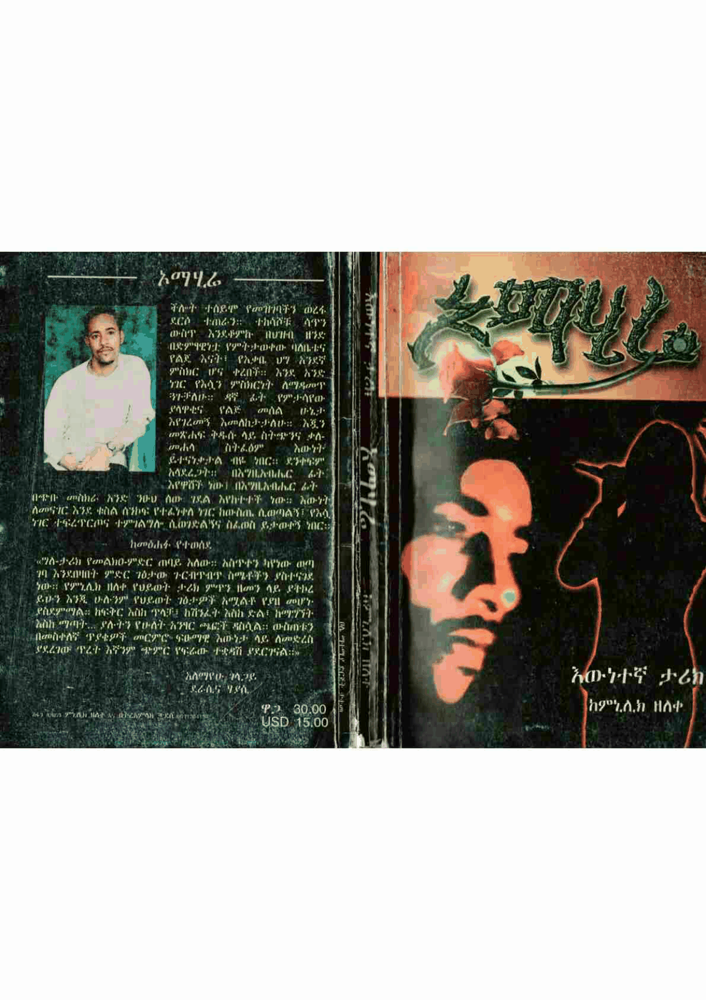
ኦማሂሬ omahire ምኒሊክ ዘለቀ · 2010 -
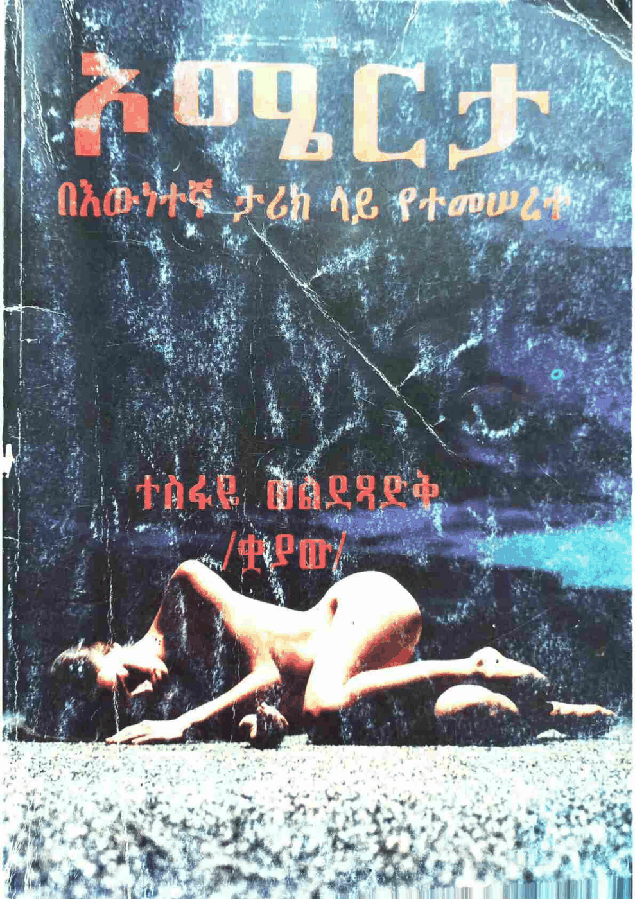
ኦሜርታ omerta ተስፋዬ ወልደጻድቅ (ቋያው) · 2011 -
ኦሪት ዘፍጥረት ማብራሪያኦሪት ዘፍጥረት ማብራሪያ Orit Zefitiret Mabrariya Deacon Yaregal Abegaz
-
ኦሪት ዘፍጥረት(ቅዱስ ዮሐንስ አፈወርቅ እንዳስተማረው)ኦሪት ዘፍጥረት(ቅዱስ ዮሐንስ አፈወርቅ እንዳስተማረው) Orit Ze Fitiret (Kidus Yohannes Afework Endasitemarew) Gebreegziabher Kide · 2016
-
ኦሪት ዘፍጥረት (ቅዱስ ዮሐንስ አፈወርቅ እንዳስተማረው)(ድርሳን 1-3ኦሪት ዘፍጥረት (ቅዱስ ዮሐንስ አፈወርቅ እንዳስተማረው)(ድርሳን 1-30) Orit Zefitiret (Kidus Yohannes Afework Endasitemarew)(Dirsan 1-30)
-
ኦሪጅንኦሪጅን Origin Dan Brown
-
ኦርቶዶክሳዊ ሕይወትን መኖርኦርቶዶክሳዊ ሕይወትን መኖር Orthodoksawi Hiywoten Menor Abune Shinoda Salsawi
-
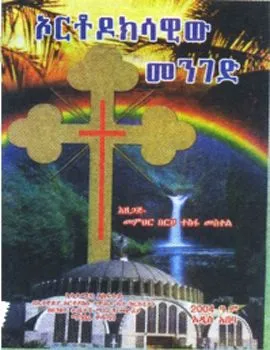
ኦርቶዶክሳዊ መንገድ ortodoksawi menged ብርሃን ተስፋ መስቀል · 2012 -
ኦርቶዶክሳዊ መንፈሳዊነትኦርቶዶክሳዊ መንፈሳዊነት Orthodoksawi Menfesawinet Deacon Hilina Belete
-
ኦርቶዶክሳዊ ቅዱሳት ሥዕላት (ታሪክ መፈሳዊ ትርጉም የሊቃውንት አስተምኦርቶዶክሳዊ ቅዱሳት ሥዕላት (ታሪክ መፈሳዊ ትርጉም የሊቃውንት አስተምህሮ እና ሌሎችም Orthodoksawi Kidusat Se'lat (Tarik , Mefesawi Tirgum Yelikwaintn Asitemihiro Ena Lelochim...) Hailemariam Shimelis · 2015
-
ኦርቶዶክሳዊ ቤተሰብ (ቅዱስ ዮሐንስ አፈወርቅ እንዳስተማረው)ኦርቶዶክሳዊ ቤተሰብ (ቅዱስ ዮሐንስ አፈወርቅ እንዳስተማረው) Orthodoksawi Beteseb (Kidus Yohannes Afework Endetsafew)
-
ኦርቶዶክሳዊ ቤተሰብ እና የልጆች አስተዳደግ (ክፍል ፩)ኦርቶዶክሳዊ ቤተሰብ እና የልጆች አስተዳደግ (ክፍል ፩) Orthodoksawi Beteseb ena YeLijoch Astedadeg (Kifil 1) W/O Zewdie G/E'gziabher · 2012
-
ኦርቶዶክሳዊ ተዋሥኦ (መጽሐፍ ቅዱስ ላይ የተጠየቁ ጥያቄዎችና መልሶቻቸኦርቶዶክሳዊ ተዋሥኦ (መጽሐፍ ቅዱስ ላይ የተጠየቁ ጥያቄዎችና መልሶቻቸው) Orthodoksawi Tewaseo (Metsihaf Kidus Lay Yeteteyeku Tiyakewochina Melisochachew) Memihir Betremariam Abebaw
-
ኦርቶዶክሳዊነት እና የሰይጣን መንግሥትኦርቶዶክሳዊነት እና የሰይጣን መንግሥት Orthodokisawinet Ena YeSeytan Mengist Aba Spredon Beyle
-
ኦርቶዶክሳዊ ንስሓ (ክፍል አንድ)ኦርቶዶክሳዊ ንስሓ (ክፍል አንድ) Orthodoksawi Niseha (Kifil Ande) Deacon Bantamilak Ayalew
-
ኦርቶዶክሳዊ አእምሮኦርቶዶክሳዊ አእምሮ Orthodoksawi Ae'mro Deacon Yohannes Getachew
-
ኦርቶዶክሳዊ ክህነትኦርቶዶክሳዊ ክህነት Orthodoksawi Kihnet
-
ኦርቶዶክሳዊ ወጣትነትና መንፈሳዊ አገልግሎቱኦርቶዶክሳዊ ወጣትነትና መንፈሳዊ አገልግሎቱ Orthodoksawi Wetatinetina Menfesawi Agelglotu
-
ኦርቶዶክሳዊ ወጣት እና ፈተናዎቹኦርቶዶክሳዊ ወጣት እና ፈተናዎቹ Orthodoksawi Wetat Ena Fetenawochu Deacon Dagmawi Solomon
-
ኦርቶዶክሳዊው መንገድኦርቶዶክሳዊው መንገድ Orthodoksawiw Menged Berha Tesfa Meskel · 2012
-
ኦርቶዶክሳውያን እና ፖለቲካኦርቶዶክሳውያን እና ፖለቲካ Orthocsawiyan Ena Poletika Dawit Desta
-
ኦርቶዶክስ መልስ ናትኦርቶዶክስ መልስ ናት Orthodoxs Melis Nat Deacon Gebre Kidan
-
ኦርቶዶክስ መልስ አላትኦርቶዶክስ መልስ አላት Orthodoks Melis Alat Deacon Gebre Kidan
-
ኦርቶዶክስ መልስ አላት /ከፕሮቴስታንቶች ለሚነሡ አንዳንድ ጥያቄዎች የኦርቶዶክስ መልስ አላት /ከፕሮቴስታንቶች ለሚነሡ አንዳንድ ጥያቄዎች የተሰጡ መልሶች/ Orthodox Mels Alat /KeProtestantoch Leminesu Andand Tiyakewoch Yetesetu Melsoch/ Deacon Daniel Kibret · 2011
-
ኦርቶዶክስያ (በእንተ ርትዕት ሃይማኖት ዘኦርቶዶክስ ተዋሕዶ)ኦርቶዶክስያ (በእንተ ርትዕት ሃይማኖት ዘኦርቶዶክስ ተዋሕዶ) Orthodokisia (Be'ente R'tet Haymanot ZeOrthodoks Tewahedo) YeMemihir Girma Timihirtawi Sibkeoch Sibisib
-
ኦርቶዶክስ ጋብቻ እና የልጆች አስተዳደግ (ክፍል ፩)ኦርቶዶክስ ጋብቻ እና የልጆች አስተዳደግ (ክፍል ፩) Orthodoksawi Gabicha Ena Yelijoch Astedadeg (Kifil 1) Kesis Yigzaw Mekonnen · 2012
-
ኦርቶጵያ(የኢትዮጵያ ኦርትሆዶችስ ተዋህዶ ቤተክርስቲያንን ጥርስ ውስጥኦርቶጵያ(የኢትዮጵያ ኦርትሆዶችስ ተዋህዶ ቤተክርስቲያንን ጥርስ ውስጥ ያስገባት የ2000 ዓመት ጉዞና መጨው ፈታኝ ጊዜ) Orthodocs (YeEthiopia Orthodocs Tewahedo Betechristian Tirs Wist Yasgebat Ye2000 Amet Guzona Mechiw Fetagn Gize) Kes Doctor Jhon Beans
-
ኦርያሬስኦርያሬስ Oriyares Memihir Samuel Solomon
-
ኦሮሚያን በፈረቃ ?? (አቢሲኒዮክራሲ ወይስ ዲሞክራሲ ??)ኦሮሚያን በፈረቃ ?? (አቢሲኒዮክራሲ ወይስ ዲሞክራሲ ??) Oromiyan Befereka ?? (Abisiniyocracy weyis Democracy ?) Motti Biya · 2015
-
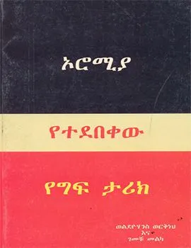
ኦሮሚያ የተደበቀው የግፍ ታሪክ oromiya yetedebeqew yegef tarik ወልደዮሃንስ ወርቅነህ, ገመቹ መልካ -
ኦሮሚያ የተደበቀው የግፍ ታሪክኦሮሚያ የተደበቀው የግፍ ታሪክ Oromia Yetedebekew Tarik ገመቹ መልካ, W/Yohannes Workneh
- ኦሮማይ Oromay በአሉ ግርማ · 1983
-
 ኦሮማይ
Oromay
ኦሮማይ
Oromay
-
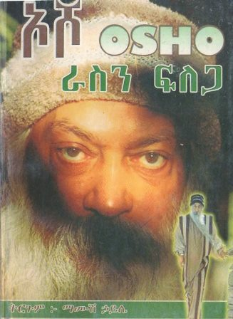
ኦሾ ራስን ፍለጋ osho rasen felega ማሙሽ ኃይሌ -
ኦሾ ራስን ፍለጋኦሾ ራስን ፍለጋ Osho (Rasin Filega)
-
ኦሾ ጥበብ ፮ኦሾ ጥበብ ፮ Osho Tibeb 6 Hailegiorgis Mamo
-
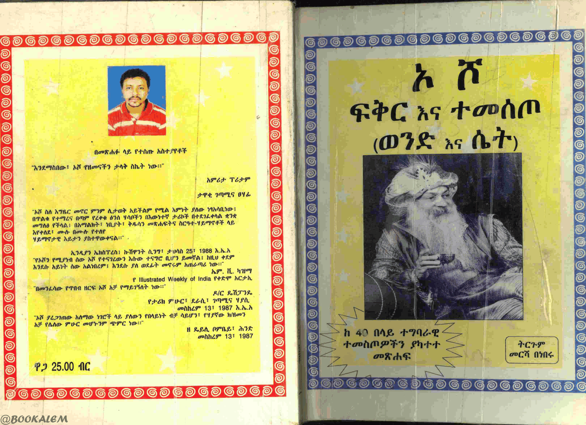
ኦ ሾ ፍቅር እና ተመስጦ (ወንድ እና ሴት) o sho feqer ena temesto (wened ena set) ኦሾ, መርሻ በነፈ · 2011 -
ኦሾ ፍቅር እና ተመስጦ (ወንድ እና ሴት)ኦሾ ፍቅር እና ተመስጦ (ወንድ እና ሴት) Osho (Fikir ena Temesto) (Wond ena Set) · 2012
-
ኦዛና ምኒልክ (ታላቁ ክብር)ኦዛና ምኒልክ (ታላቁ ክብር) Ozana Minilik (Talaku kibir) Nigusse Ayele Teka
-
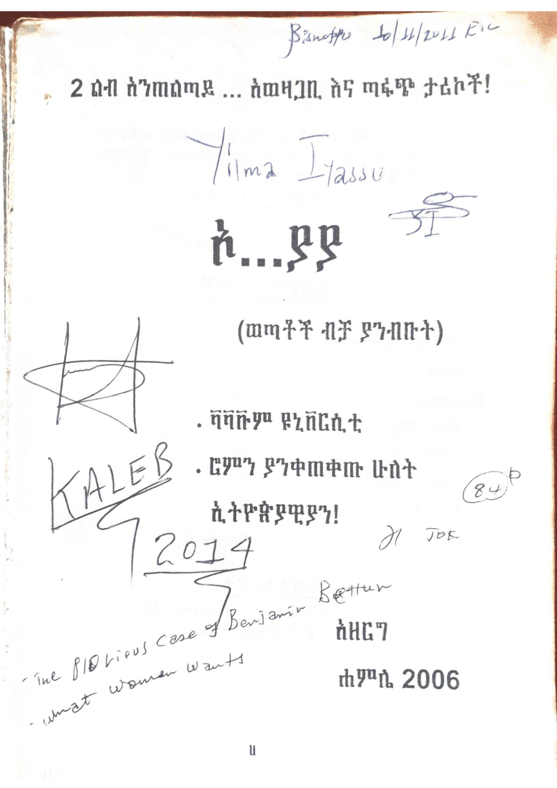
ኦ...ያያ o...yaya አዘርግ · 2006 -
ኦጋስታንጋኦጋስታንጋ Ogastanga Henok Abebe
-
ኦፕሬሽን መቅደላኦፕሬሽን መቅደላ Operation Mekdela Bisrat Atlabachew · 2012
-
ኦፕሬሽን ሰለሞን ያልተነገረው ምስጢርኦፕሬሽን ሰለሞን ያልተነገረው ምስጢር Operation Solomon Stephen Steckel
-
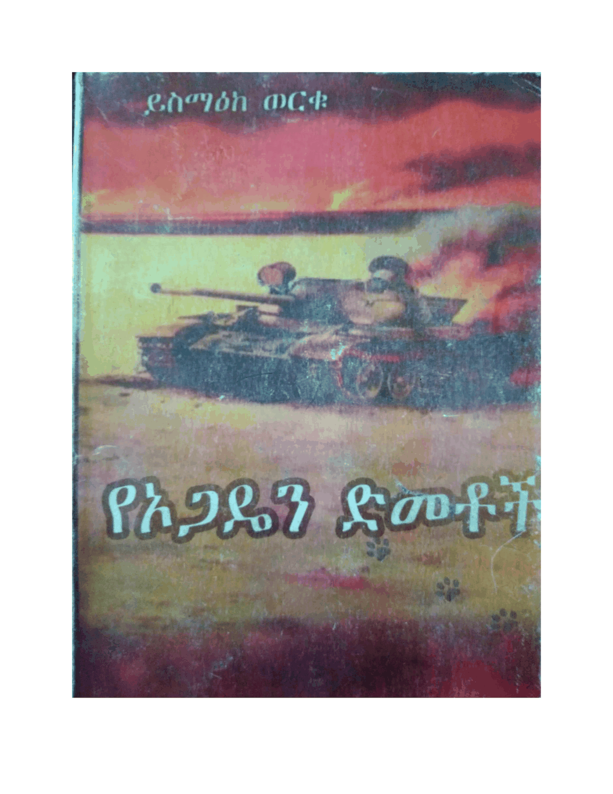
የአጋዴን ድመቶች OGADEN ይስማዕክ ወርቁ · 2011 -
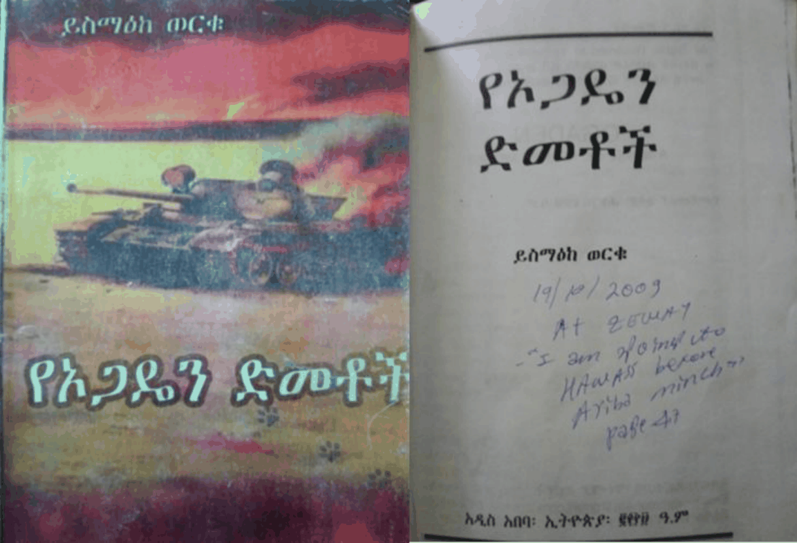
የኡጋዴን ድመቶች OGADEN ይስማዕከ ወርቁ · 2009 -
የኦሮሞ ዴሞክራሲየኦሮሞ ዴሞክራሲ Oromo Democracy Asmerom Legesse
-
የጦር ሠራዊት መለዮ ልብስ ደንብየጦር ሠራዊት መለዮ ልብስ ደንብ Order on Uniforms for the Army